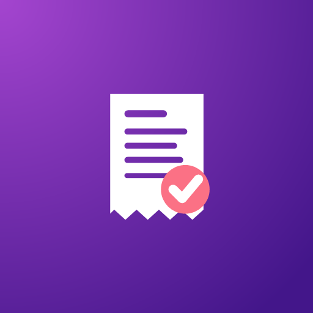
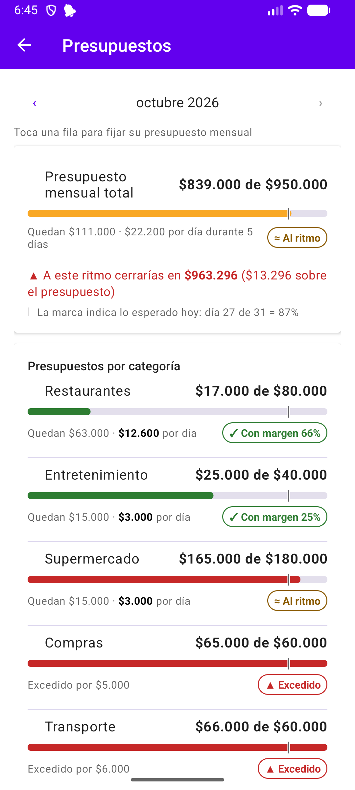
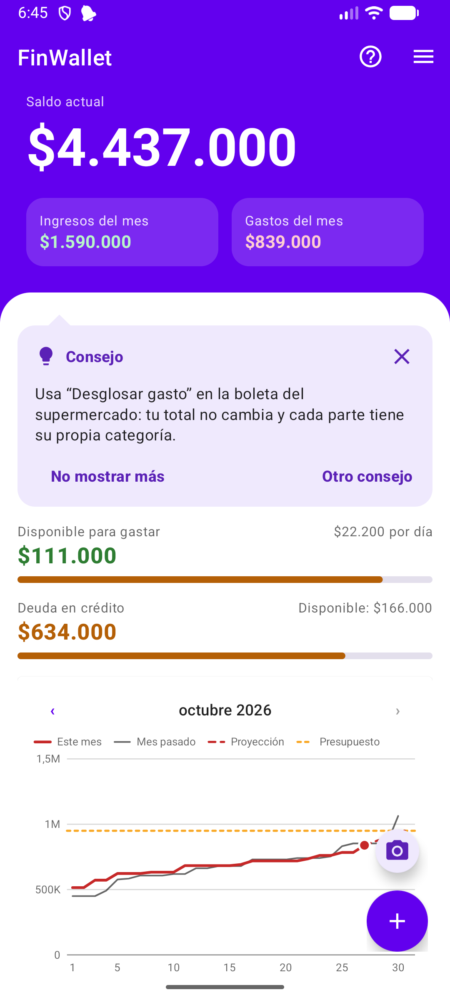
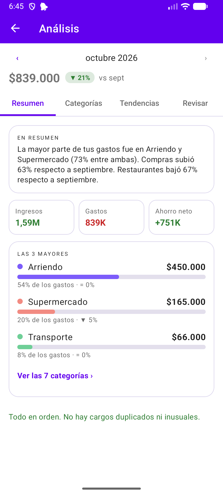
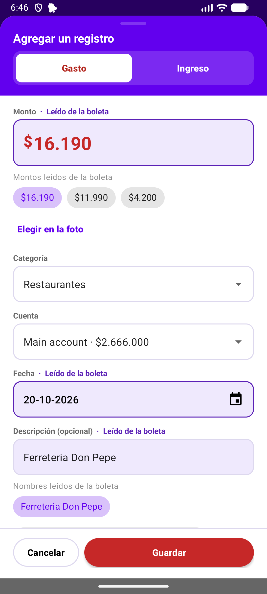
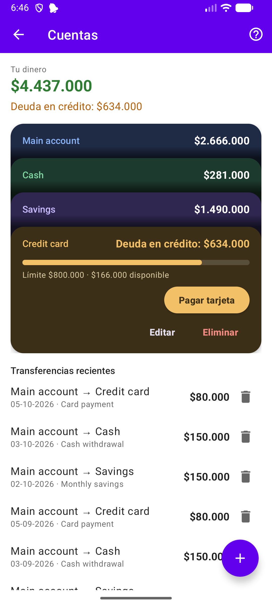

“Llegué a fin de mes y no sé en qué se fue la plata.”
Sin un registro, los gastos chicos se pierden de vista.

Una app para ordenar tus finanzas personales sin complicarte: registras en segundos, ves cómo vas en el mes y todo se queda en tu teléfono.



¿Te suena?
“Llegué a fin de mes y no sé en qué se fue la plata.”
Sin un registro, los gastos chicos se pierden de vista.
“Tengo un montón de boletas del súper en la billetera.”
Se acumulan, se borran con el tiempo y nadie las pasa a mano.
“¿Y ese cobro mensual? Ni me acordaba que lo tenía.”
Suscripciones y cobros que siguen llegando sin que los mires.
Cómo funciona
Tres pasos, sin planillas ni configuraciones eternas.
Toca el botón +: el teclado se abre listo para escribir el monto. Si cierras el formulario por error, lo que escribiste se conserva. ¿Tienes una boleta? Fotografíala y la app lee el total, la fecha y el comercio.

Cada gasto va a su categoría y a la cuenta que usaste: la cuenta corriente, el efectivo, la tarjeta de crédito. Tus presupuestos se actualizan solos.
El Resumen te muestra tu saldo, tus ingresos y gastos del mes, cuánto te queda por gastar y un gráfico que compara tu ritmo de gasto con el del mes pasado, con proyección a fin de mes.
Funcionalidades
Lee el total, la fecha y el comercio directamente en tu teléfono, sin internet. También puedes compartir una imagen desde la galería.
Define un presupuesto general y uno por categoría. Una marca en cada barra muestra dónde deberías ir hoy.

Varias cuentas, tarjetas de crédito con cupo y transferencias entre ellas. Lo que debes en crédito se muestra aparte.
En qué categorías se va tu plata y cómo se compara con tu promedio.
Arriendo, sueldo, suscripciones: automáticos o “pregúntame antes”. Ves la lista de próximos pagos y cuánto tienes comprometido cada mes.
Registra rápido y mira tu saldo y lo que te queda por gastar, sin abrir la app.
Elige qué día empieza tu mes, por ejemplo el día de pago. También puedes ver el saldo solo del mes.
Un recorrido inicial, un glosario y, si mantienes presionada una cifra, te explica qué es.
Disponible en español e inglés, con tema claro, oscuro o el de tu teléfono. Las capturas son de la app en tema claro y con datos de ejemplo.
El valor de usarla
Anotar un gasto toma segundos, y una boleta se pasa con una foto.
Pagas en la caja, sacas la foto y sigues con tu día.
Ves en qué categorías se va la plata, no solo el total.
Descubres cuáles son tus gastos más grandes del mes y cómo se comparan con tu promedio.
Sabes cómo vas antes de que termine el mes.
Llegas a fin de mes sabiendo cuánto te queda por día, no adivinando.
Nada se te pasa: los pagos fijos y las suscripciones quedan a la vista.
Antes de que llegue el cobro, ya lo viste en tus próximos pagos.
Privacidad
No te pedimos la clave del banco ni armamos una cuenta en la nube.
Beta cerrada
Estamos probando FinWallet con un grupo pequeño durante 14 días. Si tienes un teléfono Android, inscríbete y te escribimos con el enlace para unirte.